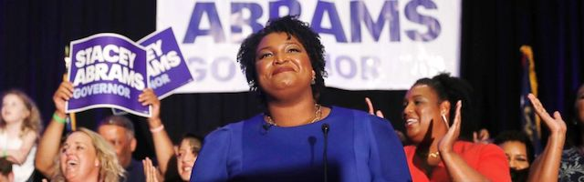

2018-08-02 08:00

If you hadn’t noticed it before, the 2016 presidential election only sharpened our awareness of America’s festering race problem. White liberals may be repulsed by Donald Trump’s Tweets and his unapologetic racism, but White Supremacy in America is not simply foul-mouthed malice. Once you realize that White Supremacy is mainly about creating a system of privilege for White people, it’s like noticing cars exactly like yours on the road — you start recognizing its insidious presence in almost every institution — the courts, schools, jobs, police, housing — and politics. And, like much in this country, the debate over the Democratic Party’s soul often overlooks the importance of African-Americans.
Congress is 90% White and 80% male. The Senate has only three African-American Senators — and only one is a woman. If the Senate looked like the rest of America, we’d have thirteen African-American Senators and seven of them would be women. But. because of demographics and the disproportionate Senate representation that states like Vermont and Wyoming receive, the Senate is one more structural element of White Supremacy. And in a nation with a median age of 37, Congress looks more like a retirement community than Main Street. The average age of the top three House Democrats is 76, and most are millionaires. The people who represent us are nothing like us — and I’m talking about Democrats.
Emily’s List is the second largest Democratic political action committee (PAC) after ActBlue. Its mission is simply to get pro-Choice Democratic women elected, and it’s been pretty successful at it. But when it comes to race, the Democratic Party isn’t ceding power to a younger, browner America. In addition, Democratic political action committees aren’t recognizing candidates of color as “viable” as readily as they do White contenders and they haven’t historically provided much funding. With both representation and funding of African-American candidates lacking by both centrist Democrats and progressives, political consultant and CollectivePAC founder Quentin James wasn’t sugarcoating it when he titled his Medium piece, “The Left Has A White Supremacy Problem, Too.”
Last year the Democratic Party sent its leadership to Berryville, Virginia to woo White voters with its “Better Deal” economic campaign. In a New York Times editorial Steve Phillips, founder of Democracy in Color and author of Brown is the New White, warned of a midterm disaster for Democrats in 2018 if they insisted on repeating the mistakes of 2016, specifically “prioritizing the pursuit of wavering whites over investing in and inspiring African-American voters, who made up 24 percent of Barack Obama’s winning coalition in 2012.” In Brown is the New White Phillips offers postmortems of the 2010 and 2014 midterms. And guess what? Democrats still haven’t learned their lesson — they’re still pursuing the White swing vote in 2018.
In its first iteration, the Democratic Congressional Campaign Committee’s “Red to Blue” candidate list — campaigns designed to take back the House — did not include a single Black candidate. Now, less than a hundred days before midterms, there may be a few more people of color on the roster, but the DCCC’s candidates are still overwhelmingly White and Centrist — technocrats and gatekeepers selected mainly for “viability.” Democrats aren’t listening to Phillips and they aren’t listening to Thomas Frank either. Frank’s book, Listen, Liberal: Or, What Ever Happened to the Party of the People, takes Democrats to task for abandoning the working class and embracing a technocratic caste located somewhere between upper-middle and the ruling class. Call it what you want, but it’s not the party of the people.
As elections have unfolded this year, the special Senate race in Alabama (in which a Democrat narrowly beat an alleged pedophile) focused attention on Black women in the party. All of a sudden Black women were receiving thanks and praise, but not feeling enough love to propel them into positions of power. And political power is to politics what air is to breathing. Black women were sick and tired of being sick and tired of being asked to support White candidates without the favor being returned.
Michelle Laws, who challenged incumbent David Price in North Carolina’s 4th Congressional district, said it best during her campaign, “There are many black women around this country who are no longer willing to be the mules of the party, doing the hard work on the ground, and receiving very little in return in terms of support and endorsement of the party to serve in key leadership positions.” With the DCCC’s strategy of defending (White) incumbents, Laws received only 16% in the Democratic primary. Political consultant Jessica Byrd expressed her frustration with the dearth of Senate seats for Black women when she wrote — “how about you get out of my chair?’”
Candidates of color endorsed and financed by PACs like CollectivePAC, PowerPAC+, Color of Change PAC, and BlackPAC have made it possible for younger and browner candidates to throw their hats into political races. Stacey Abrams in Georgia and Alejandra Ocasio-Cortez in New York are both running campaigns with wide progressive support, which involve hundreds of operatives and canvassers — both adding to a pipeline of future candidates of color and energizing White progressives. And these are the sort of campaigns the Democratic Party should be fiercely supporting.
Steve Phillips’ New American Majority is neither a new idea nor complex math. His thesis is that if you add up white progressives and progressives of color you’ve got a numerical majority that can beat Conservatives — not in 2040, when Whites will be a numerical minority, but right now. Phillips grumbles that he’d rather Greens and Libertarians vote with their Democratic friends than split the vote, but he’d really prefer that the Democratic Party offer better reasons for registered African-Americans voters to show up at the polls — like representation, support, and money. But this requires real change, not rhetoric.
Uniting progressives of different colors will require the blindingly White Democratic Party establishment to loosen its death-grip on power, while candidates of color receive more support to fundraise, train political operatives, and run candidates who reflect who they are and the values they care about. It is no coincidence that the Democratic Party has done so little for national criminal justice reform, police accountability, or immigration. Our most serious problems — racism, xenophobia, income inequality, criminal (in)justice, police abuse, healthcare, education, housing, jobs, militarism, civil liberties, political representation — all have been the concerns of Black America since the very beginning. If African-American and Latinx politicians actually held proportionate political and economic power within the Democratic Party, we might actually see some change.
In July Democratic National Committee Chair Tom Perez went before both the NAACP Convention in San Antonio and Black voters in Atlanta to apologize for the party’s turning its back on African-Americans. At this late date there’s little hope of changing the party’s orientation to White swing voters. But if the direction is ever to be changed, it will come from the grassroots, not from the leadership.
Last month I had the opportunity to attend CollectivePAC’s Black Campaign School in Atlanta, Georgia. I met Quentin and Stephanie James, lead trainer Jessica Byrd, and numerous candidates (and sitting politicians) of color who shared their campaign experiences with a largely millennial audience of first-time candidates and volunteer staffers. I was not the only White person in attendance; several others were working on campaigns for African-American candidates, mainly in the South.
I came away believing more than ever that Steve Phillips is on to something. The rescue of the country depends on whatever political power the Democratic Party can still muster. But the Democratic Party has a vision problem, a values problem, and a representation problem. When it comes to social and political reforms, the overwhelmingly White Democratic Party leadership just doesn’t have enough skin in the game. Does Chuck Schumer have an incarcerated brother? Stacey Abrams does.
The best way forward, I firmly believe, is by working with, and following the lead, of those who truly, personally, know the value of fixing America.